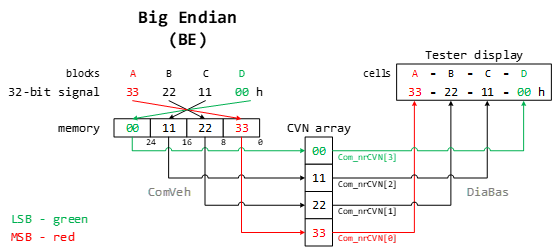

Little Endian (LE) / Big Endian (BE) explanation. (examples given for a 32 bit system).
-
Endianness describes in which Byte order Words are stored in the memory.
-
In a 32 bit system, a Word is 32 bits long and consists of 4 Bytes.
-
Little Endian (LE) means, the Least Significant Byte (LSB) of a Word is stored at the lowest memory address of that Word.

-
Big Endian (BE) means, the Most Significant Byte (MSB) of a Word is stored at the lowest memory address of that Word.

-
The bit order inside a Byte, is not effected by endianness and stays the same.
-
E.g. 32 bit Word AA BB CC DDh
When red in that representation, the leftmost number is the most significant --> MSB = AAh
The rightmost number is the lest significant --> LSB = DDh
-
Mem storage for LE:
-
Mem storage for BE:
A CVN number is a 32 bit number divided in the 4 8-bit blocks A,B,C,D.
Those blocks are displayed in the Tester Software in the format A - B - C - D.
In that nomenclature, Block A is the MSB of the CVN and Block D is the LSB.
The CVN is provided to the DiaBas service via a Byte array with 4 Element: Com_nrCVN[0] - Com_nrCVN[3]
Array element 0 gest mapped to the display cell A and element 3 gets mapped to the display cell D.
When the CVN is sent via 4 separate 8-bit signals on the bus, endianness in the ECU is irrelevant and each byte can be mapped separately to the array elements according to their naming.
When the CVN is sent via 1 32-bit signal, the 32-bit memory representation of the signal needs to be divided into 4 8-bit blocks and mapped to the array elements according to the endianness of the system.
Based on the Tester Display in the format A - B - C - D, Com_nrCVN[0] must hold the MSB of the 32-bit bus signal and Com_nrCVN[3] must hold the LSB of the 32.bit bus signal.
E.g. CVN = 33 22 11 00h and is transmitted via a 32-bit bus signal holding value 33 22 11 00h. CVN needs to be displayed in the Tester in the Form 33 -22 - 11 - 00. The mapping can be shown easily in a diagramm:

MSB path is marked red, LSB path is marked green.
- IFX CPUs are LE.
- JDP CPUs are BE.